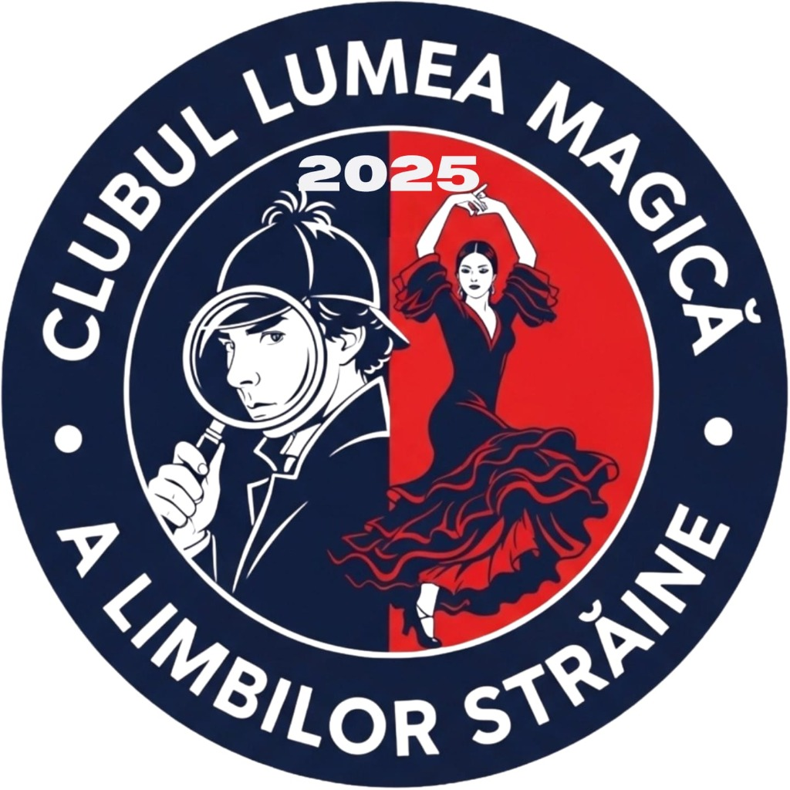
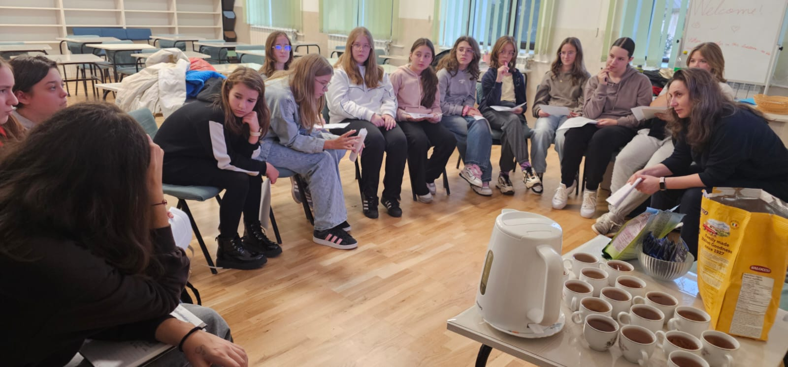
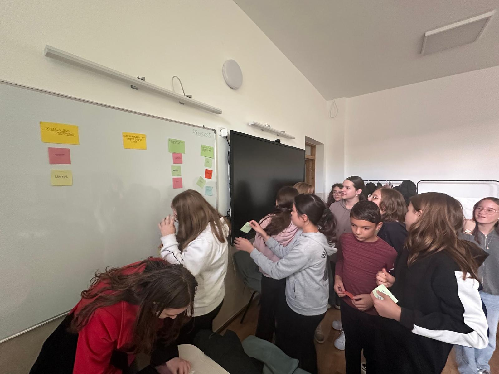
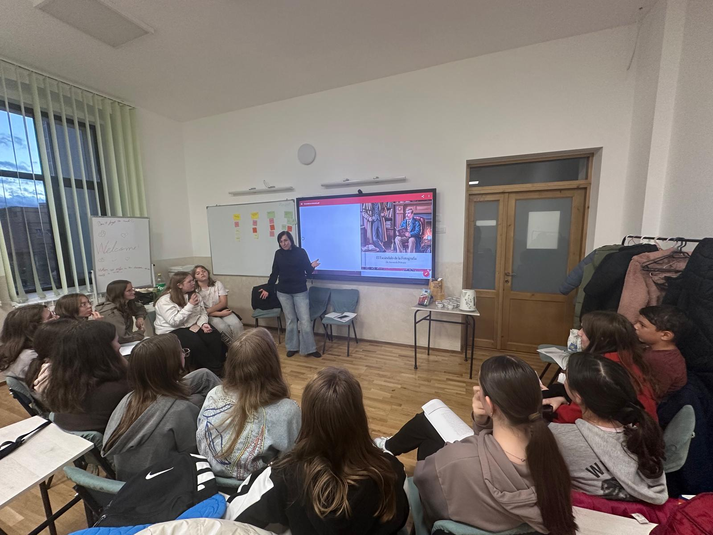

Lumea magică a limbilor străine
Mai mult decât gramatică
Un club interactiv unde învățăm engleza, spaniola și alte limbi prin joc, teatru și conversație. Descoperim culturi noi și ne facem prieteni prin limbajul universal al prieteniei.

„Sherlock Holmes și Misterul Cuvintelor: o călătorie multiculturală"
Prof. Simona Varvaroi
Prof. Antoanela Pohoață
15 elevi
Selecționați pe criterii de performanță și talent lingvistic
Detectivii în acțiune
Înființat din dragoste pentru copii, clubul nostru își propune să transforme învățarea limbilor străine dintr-o materie școlară într-o aventură pasionantă. Pentru anul școlar 2025-2026, am ales ca ghid universul de detectiv al lui Sherlock Holmes.
De ce această temă? Pentru că investigația seamănă perfect cu învățarea unei limbi: ai nevoie de atenție, de logică, cauți indicii (cuvinte cheie) și rezolvi mistere (traducerea și înțelegerea textului). Vom naviga printre limbile română, engleză și spaniolă, stimulând nu doar memoria, ci și gândirea critică.
Obiectivele proiectului
- Dezvoltarea vocabularului: îmbogățirea cunoștințelor de engleză și spaniolă prin termeni specifici literaturii de mister și aventură.
- Stimularea logicii: folosirea metodelor deductive pentru a înțelege texte și situații noi.
- Culturalizare: familiarizarea copiilor cu literatura clasică (Sir Arthur Conan Doyle) și cu elemente de cultură hispanică.
- Coeziunea grupului: un imn propriu și activități de echipă.
Resurse și metode
Texte suport: „Scandal în Boemia" de Sir Arthur Conan Doyle (text de bază), adaptări scurte, articole de ziar din epocă, benzi desenate.
Metode: lectura explicativă, jocul de rol, conversația dirijată, exerciții de deducție, ascultare muzicală.
Imnul clubului
Calendarul activităților
Cele patru module ale aventurii noastre
Inițierea: „Bun venit în Baker Street!"
Selecția detectivilor, crearea imnului clubului (RO/EN/ES), prezentarea personajelor Sherlock și Watson.
Investigația literară: „Misterul din Boemia și alte enigme"
Lectură și analiză de text, atelier de traducere creativă, dezbateri („Ce ai fi făcut tu?").
Joc și logică: „Antrenamentul minții"
Vânătoarea de comori și rebusuri, vizionare de filme, frământări de limbă (tongue twisters).
Marea finală: „Dosarul este închis"
Redactarea finalului propriu pentru o poveste, festivitatea de încheiere, diplome de Maestru Detectiv.
Evaluarea
Nu dăm note. Evaluarea se face prin Portofoliul Detectivului, observarea directă a implicării și entuziasmul participării.
Finalitatea
La sfârșitul anului școlar, cei 15 copii vor stăpâni un vocabular extins, vor gândi mai structurat și vor veni la orele de limbi străine cu zâmbetul pe buze, nu cu teama de a greși.
Echipa noastră de detectivi lingviști


